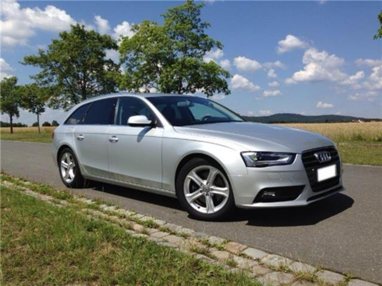
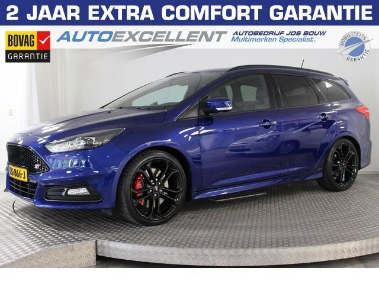
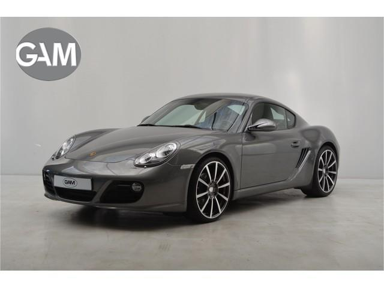

Auto's
Audi A4 Avant 1.8 TFSI Ambiente

Prijs:
€25.500,-
Overige informatie:
Staat:
Categorie:
Gebruikt:
Vorige eigenaren:
1
Gegevens:
Merk:
Audi
Model:
A4
Bouwjaar:
2011
Kleur:
Zilver
Carrosserietype:
Stationwagen
Deuren:
5
Stoelen:
5
Sleutel Nummer:
0588/AGZ
Landversie:
Duitsland
Aandrijving:
Transmissie:
Handgeschakeld
Versnellingen:
6
Cilinderinhoud:
1.798 cm³
Cilinders:
4
Leeggewicht:
1.545 kg
Milieu:
Brandstof:
Benzine
Brandstofverbruik:1
7,2 l/100 km (gem.)
9,6 l/100 km (stadsverkeer)
5,8 l/100 km (buitenwegen)
CO2-emissie1:
169 g CO2/km (gem.)
Emissieklasse:
Euro 5
Ford Focus Wagon 2.0 ST Climate Control-250PK-Navigatie-Recar

Prijs:
€ 29.795,-
Overige informatie:
Staat:
Categorie:
Gebruikt
Volledige onderhoudshistorie:
In de auto is niet gerookt
Gegevens:
Merk:
Ford
Model:
Focus
Advertentienr.:
ZG866J
Bouwjaar:
2017
Kleur:
Blauw
Soort lak:
Metallic
Oorspronkelijke kleur:
Blauw
Interieurinrichting:
Half leder
Carrosserietype:
Stationwagen
Deuren:
5
Stoelen:
5
Landversie:
Nederland
Aandrijving:
Transmissie:
Handgeschakeld
Versnellingen:
6
Cilinderinhoud:
1.999 cm³
Cilinders:
4
Leeggewicht:
1.361 kg
Aandrijving:
voor
Milieu:
Brandstof:
Benzine
Brandstofverbruik:1
6,8 l/100 km (gem.)
8,8 l/100 km (stadsverkeer)
5,7 l/100 km (buitenwegen)
CO2-emissie1:
159 g CO2/km (gem.)
Emissieklasse:
Euro 6
Porsche Cayman S 3.4

Prijs:
€ 34.800,-
Overige informatie:
Staat:
Categorie:
Gebruikt
Garantie:
Volledige onderhoudshistorie
Gegevens:
Merk:
Porsche
Model:
Cayman
Advertentienr.:
9193340-AWD
Bouwjaar:
2009
Kleur:
Grijs
Soort lak:
Metallic
Oorspronkelijke kleur:
Meteor Gray Metallic (gri
Interieurinrichting:
Leder, Zwart
Carrosserietype:
Coupé
Deuren:
3
Stoelen:
2
Aandrijving:
Transmissie:
Handgeschakeld
Cilinderinhoud:
3.436 cm³
Cilinders:
6
Leeggewicht:
1.350 kg
Aandrijving:
achter
Milieu:
Brandstof:
Benzine
Brandstofverbruik:1
9,8 l/100 km (gem.)
14,4 l/100 km (stadsverkeer)
7,2 l/100 km (buitenwegen)